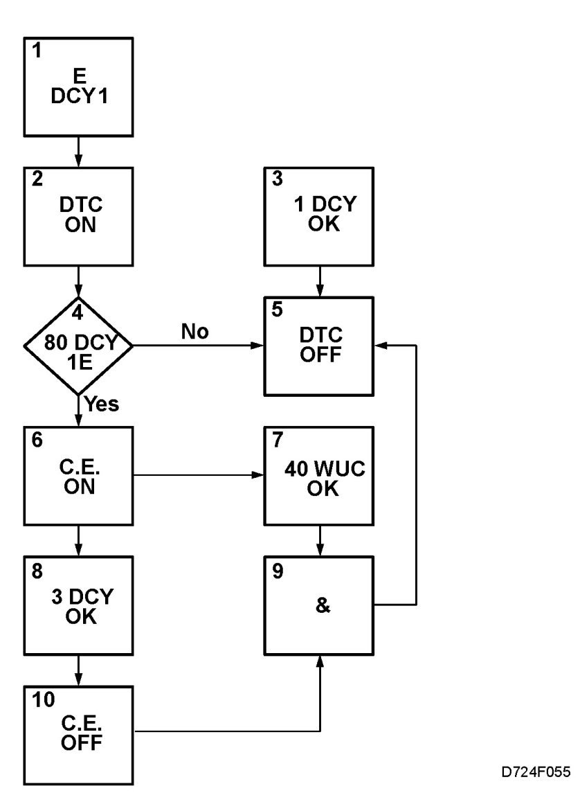
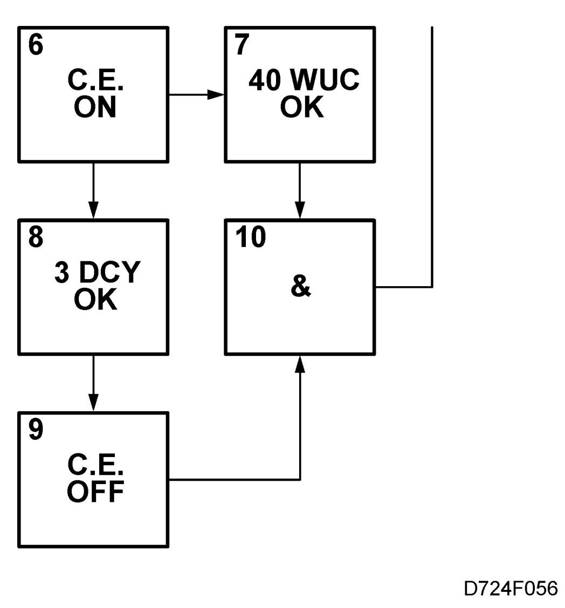

Fault Handling II, Emission-Related Misfiring Or Fault In Fuel System
Fault Handling II, Emission-related Misfiring Or Fault In Fuel System
When fault criteria for closed loop, adaptation or emission-related misfiring are fulfilled and any dependents are OK, a diagnostic trouble code will be generated.
To clear the diagnostic trouble code without having to take any further measures requires 1 driving cycle under similar operating conditions as when the fault first occurred or 80 driving cycles without the fault reoccurring.
The CHECK ENGINE lamp will go on if the fault reoccurs within 80 driving cycles.
For the CHECK ENGINE lamp to go out without any further measures being taken requires 3 consecutive driving cycles under similar operating condition as when the fault first occurred without the fault reoccurring.
For the diagnostic trouble code to be cleared requires a further 40 fault-free warming-up cycles.
1. Fault criteria for closed loop, adaptation or emission-related misfiring fulfilled

Dependents are OK
2. Diagnostic trouble code generated
3. Fault does not occur for 1 driving cycle under similar operating conditions as when the fault first occurred
4. Same fault occurs within 80 driving cycles
5. Diagnostic trouble code cleared
6. CHECK ENGINE lamp goes on

7. Fault does not occur during 40 warming-up cycles
8. Fault does not occur during 3 consecutive driving cycles under similar operating conditions as when the fault first occurred
9. And
10. CHECK ENGINE lamp goes out